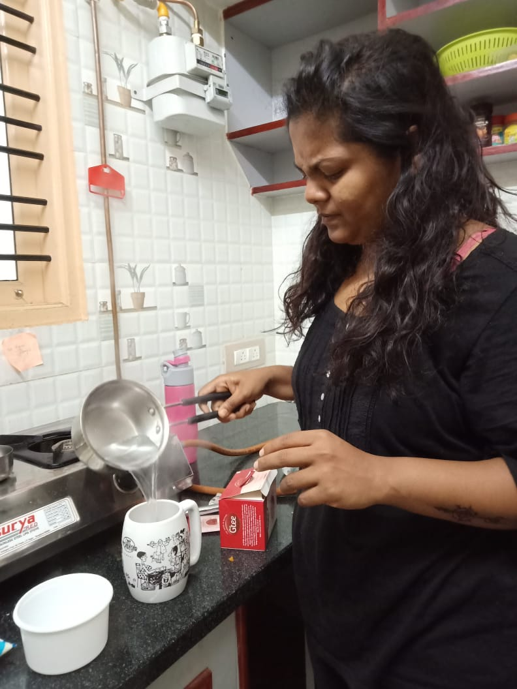
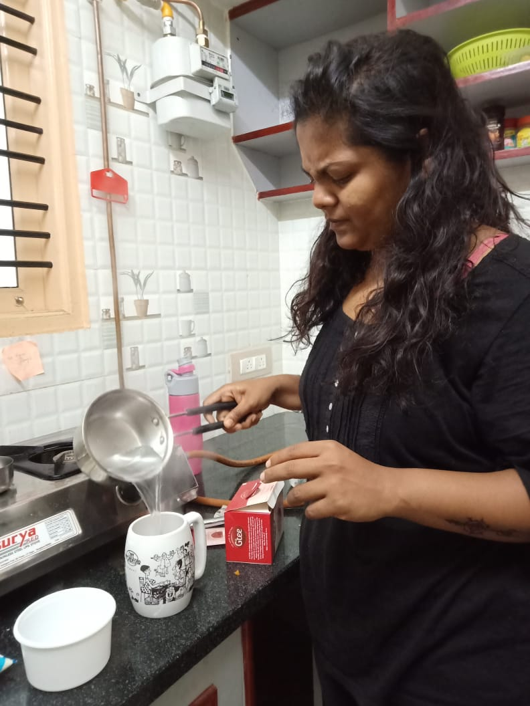
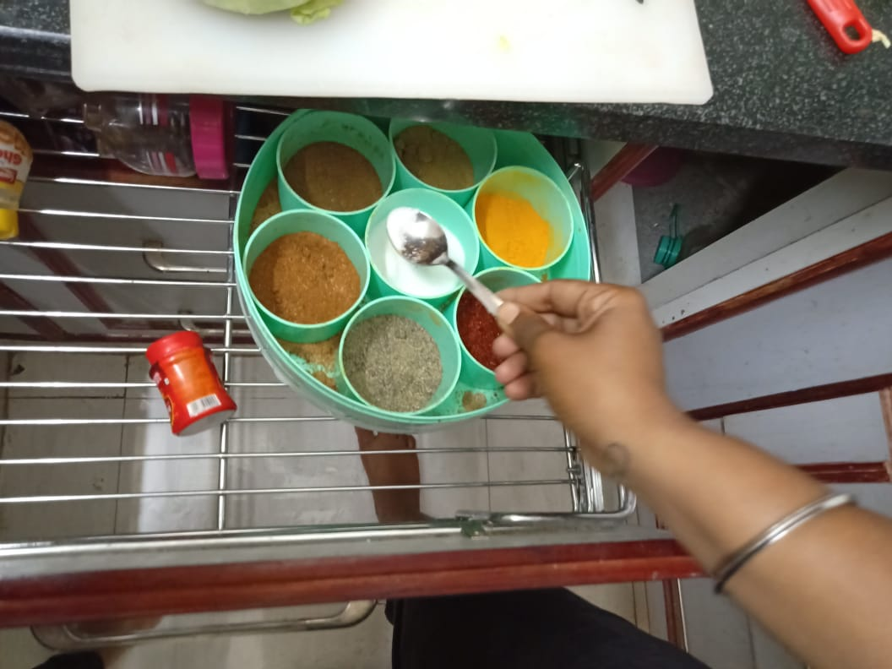
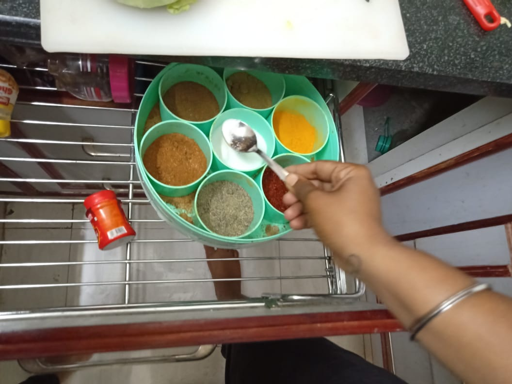

Understanding the User
To empathize and understand the end user and his relation to the design, we need to understand 2 major factors:
1.His activities all day long.
2.The factors impacting our area of concern.
Context: Concider you are motivated to keep yourself fit. To have a compelete understanding of this, we first need to analyse all the activities we perform through the day and the factors affecting thoes activities
Task:Tracking the activities performed throughout the day and the mood at that time. This is known as user activity mapping.

User Activity Maping
Task:Tracking the activities performed throughout the day and click photos for further analysis of every task in detail.

 


 


User Journey Photos
Task: Map all the factors affecting your decision of staying fit. This is known as Staker holder Analysis.

Stakeholder Analysis
Task: Map all the factors affecting your decision of staying fit on a graph of Power VS Influence with the graph progressing from low power low influence to high power hig influence. This is known as Staker holder Mapping.

Stakeholder Mapping